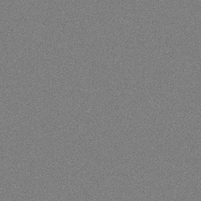
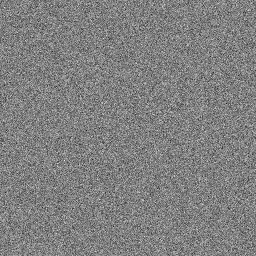

← Tutorial hub · 1D Fourier Lab · Pixel & Quantisation Lab
60-minute practical: 5-minute setup; display contrast and histograms (20 min), LUTs (15 min), noise (15 min), and DICOM/exit ticket (5 min). All image-processing activities use ImageJ.
Part A · Display contrast and histograms (20 minutes)
- Open Windowing_phantom_256.png in ImageJ. Choose Image → Duplicate to preserve the original.
- Use Image → Adjust → Brightness/Contrast; compare Auto with Reset. Then open Image → Adjust → Window/Level. Narrow width; next move the level while holding width approximately fixed.
- On the unchanged original image, choose Analyze → Histogram. Remember that stored pixel values and their display mapping are different things.

A1. What happens visually when window width narrows? What does window level change?
A2. If stored pixel values become smaller (but display mapping stays fixed), what happens to the histogram and visual appearance?
Part B · Look-up tables (15 minutes)
- Duplicate the original phantom again. Select Image → Lookup Tables → Invert LUT; compare the display with the original.
- Generate Analyze → Histogram for the original and LUT-inverted version. The LUT mainly changes display, not necessarily the stored pixel intensities.
B1. Define a LUT. Does display inversion necessarily change the stored histogram?
Part C · Noise and standard deviation (15 minutes)


- Open Noise_low_256.png and Noise_high_256.png. These use simulated Gaussian fluctuations—not actual photon counting.
- In ImageJ, choose Analyze → Set Measurements… and tick Mean gray value and Standard deviation. Draw a similarly placed ~100 × 100-pixel rectangular ROI in each image and choose Analyze → Measure.


| Measurement | Lower-noise | Higher-noise |
|---|---|---|
| Mean | ________ | ________ |
| Standard deviation | ________ | ________ |
C1. Which image has more noise? Why is standard deviation more informative than mean in a uniform region?
C2. How can quantum mottle obscure faint details on a radiograph?
DICOM and take-home messages (5 minutes)
DICOM (Digital Imaging and Communications in Medicine) standardises image formats, metadata and communications for compatible systems.
D1. How does DICOM help devices and software from different manufacturers work together?
- Window width controls the displayed intensity range; level selects its centre.
- LUTs map pixel values to display appearance; inversion of display need not change the underlying pixel array.
- Standard deviation in a uniform ROI indicates fluctuation/noise; more noise can hide faint detail.
- DICOM supports interoperability through standard image and metadata conventions.
Reveal answers and explanations
Try the questions before opening an answer. You can open each one or reveal them all together.
A1 · Window width and window level
A narrower window width spreads a smaller range of stored intensities over the available display shades, increasing visible contrast within that range while clipping values outside. Window level selects the middle of the display range, shifting which intensities are emphasised.
A2 · Histogram shifts
If stored intensities decrease, the stored-value histogram shifts toward smaller numbers (left). With a fixed display mapping, the image generally appears darker. Re-windowing can change how those values look without moving the original stored histogram.
B1 · Look-up tables and display inversion
A LUT maps an input intensity value to an output display value or colour. Inverting only the display LUT reverses how brightness is shown; it does not necessarily alter stored pixels or the histogram of those pixels.
C1 · Noise and standard deviation
The higher-noise image has greater standard deviation measured in a uniform region. Standard deviation describes pixel-to-pixel fluctuations; the mean measures average brightness and can be similar even when the amount of noise differs.
C2 · Quantum mottle
Photon arrivals are random. When fewer photons are detected, relative fluctuations are larger and the resulting image appears grainier; subtle low-contrast details may become harder to distinguish. The teaching PNGs use simulated Gaussian noise, not actual photon-counting data.
D1 · DICOM interoperability
DICOM standardises medical images, associated information (metadata), and network communication so compatible scanners, viewers, archives and systems from different manufacturers can exchange and interpret studies consistently.